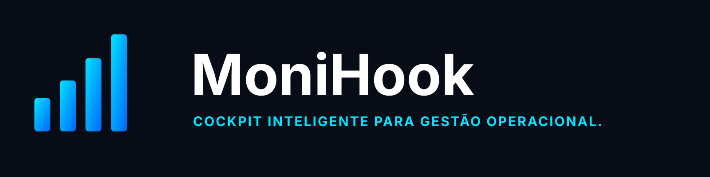

Conecte sistemas
Reúna dados e indicadores críticos em uma única visão confiável.


Cockpit operacionalConecte sistemas, centralize indicadores e receba alertas inteligentes para conduzir uma operação mais ágil, eficiente e estratégica.
Reúna dados e indicadores críticos em uma única visão confiável.
Acompanhe desempenho e contexto sem alternar entre ferramentas.
Identifique desvios antes que se transformem em impacto operacional.
Veja como o MoniHook transforma sinais dispersos em decisões rápidas.
Agendar demonstração